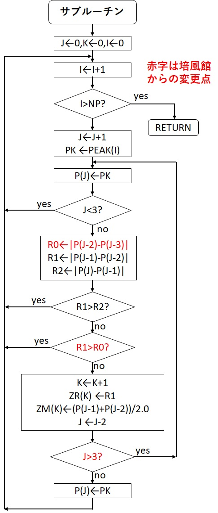

レインフロー法と実質同等な評価結果を与えるヒステリシスループ波形計数法が文献[1]に記載されています。ここに記載されているヒステリシスループ法のアルゴリズムは、実質レインフロー法の評価結果と同じ結果を与えますが、厳密に見ると少しだけ異なっていました。しかし、ヒステリシスループ法のアルゴリズムを下図のように変更すると、完全にレインフロー法と合致することが判明しました。赤字の部分が培風館からの変更点です。ただし、2021.9.23付で掲載しました新アルゴリズムは、一部不適切な部分がありました。お詫びします。
検証は、ASTM E1049-85(2017) Rainflow Counting Exampleのデータに対して行っています。詳しくは、「レインフロー法による疲労被害評価ソフト(PYTHON版)」のページの例題1を参照して下さい。

これにて、完全にレインフロー法と一致すると考えていますが、不都合がありましたらメール連絡下さい。なお、当サイトから提供する波形計数システムのうち、この対応を行っているのは、Python版のみです。Windows版とR版は修正していませんので、注意して下さい。(2022.7.2)